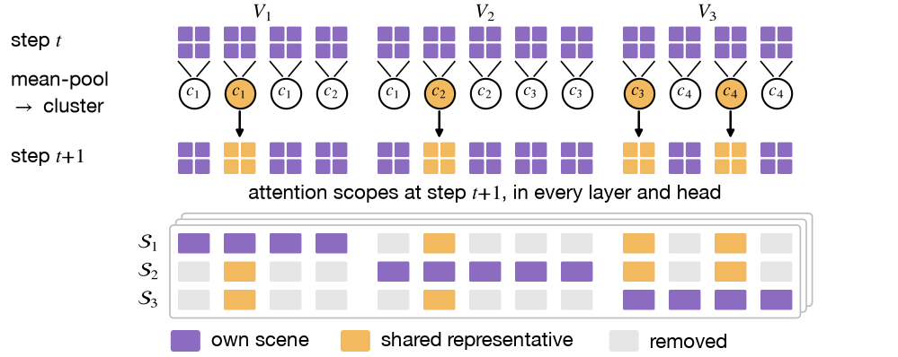
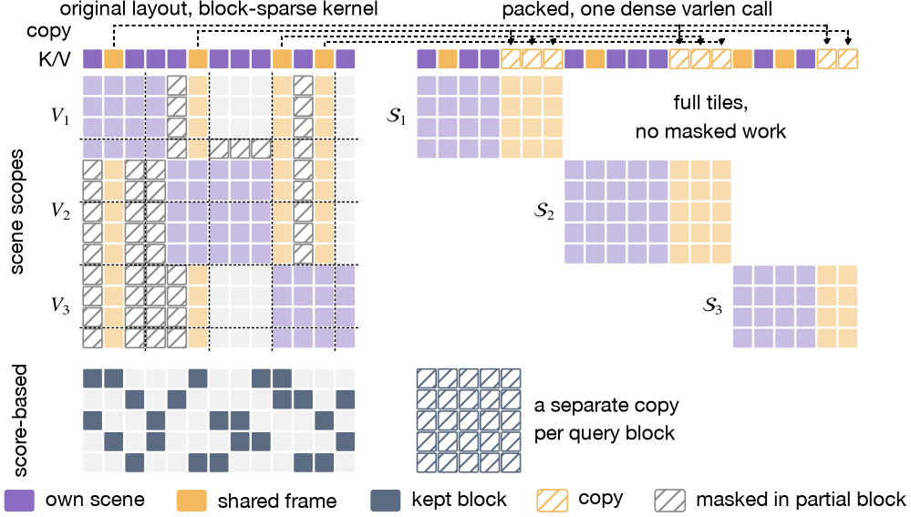
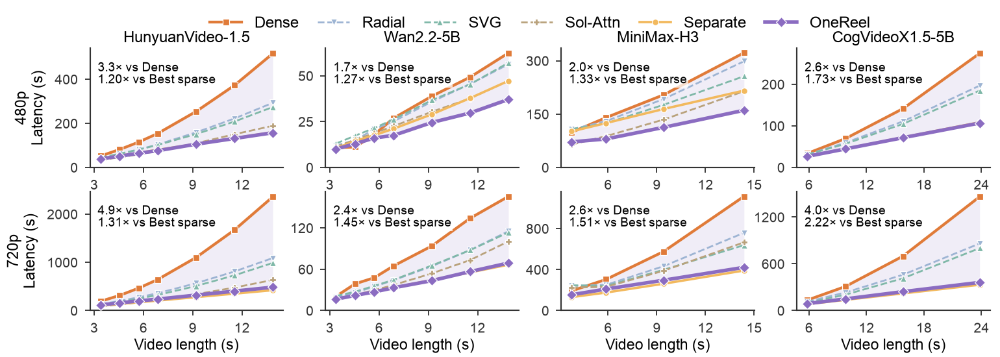

Efficient Multi-Scene Video Generation with Scene-Structured Attention
1University of Illinois Urbana-Champaign2University of Texas at Austin 3Stanford University*Equal contribution
A six-scene story generated in one pass with OneReel on MiniMax H3. Each scene follows its own sentence, from packing a suitcase at home to a sunset on a balcony.
Multi-scene video generation must follow scene-specific prompts while preserving consistency across scenes. Dense joint generation enables cross-scene information exchange but incurs quadratic attention cost, whereas separate generation avoids this cost at the expense of cross-scene consistency. We present OneReel, a training-free system that exploits scene structure to enable efficient multi-scene generation. Our key insight is that multi-scene generation can preserve complete intra-scene attention while restricting cross-scene information exchange to a bounded shared memory. OneReel uses scene prompts and durations to establish scene-specific attention scopes and dynamically selects a bounded set of representative latent frames for cross-scene sharing. This reduces video attention complexity from quadratic to linear in the number of scenes. To translate these savings into execution speedups, OneReel packs scene-local and shared K/V into dense variable-length attention and employs work-balanced multi-GPU partitioning with communication-aware selection between K/V gathering and Ulysses-style parallelism. Our evaluations across four video generation models show that OneReel achieves 1.7–4.9× end-to-end speedup over dense attention and 1.2–2.2× over existing sparse-attention advances, while improving text-following accuracy by 34–37 percentage points and maintaining cross-scene consistency.
The same multi-scene prompt and seed on HunyuanVideo-1.5. Dense joint generation keeps the subject but tends to blur the scenes into one. Separate generation follows each prompt but often changes who the subject is. OneReel follows every scene and keeps the subject. The three videos play in sync; click a scene to jump to it.
Requests with 26–30 scenes and 59 seconds of video, generated in one pass on HunyuanVideo-1.5 without fine-tuning.
On this request, dense attention stays on nearly the same shot for the whole minute.
Every scene keeps full attention over its own frames and its own sentence. Across scenes, information flows only through a small memory of representative frames. The resulting attention scopes are packed into one dense variable-length attention call, so the savings turn into real speedups.



OneReel on two base models, without any training.
OneReel's runtime also speeds up models that already have their own multi-scene attention. On HoloCine, keeping its original attention policy, OneReel on two H200 GPUs is 1.93× faster end to end than the official single-GPU implementation and produces an identical video after 50 denoising steps.
@article{zhang2026onereel,
title = {OneReel: Efficient Multi-Scene Video Generation with Scene-Structured Attention},
author = {Zhang, Wei and Wang, Yuchen and Feng, Tianrui and Wu, Hongrui and Xu, Chenfeng and Lai, Fan},
journal = {arXiv preprint arXiv:2611.10594},
year = {2026}
}